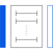

M_OLineMultiple OLine |

|
Information
This information is part of the Modelica Standard Library maintained by the Modelica Association.
The M_OLine is a multi line model which consists of several segments and several single lines. Each segment consists of resistors and inductors that are connected in series in each single line, and of capacitors and conductors both between the lines and to the ground. The inductors are coupled to each other like in the M_Transformer model. The following picture shows the schematic of a segment with four single lines (lines=4):
The complete multi line consists of N segments and an auxiliary segment_last:
-- segment_1 -- segment_2 -- ... -- segment_N -- segment_last --
In the picture of the segment can be seen, that a single segment is asymmetric. Connecting such asymmetric segments in a series forces also an asymmetric multi line. To get a symmetric model which is useful for coupling and which guaranties the same pin properties, in the segment_1 only half valued resistors and inductors are used. The remaining resistors and inductors are at the other end of the line within the auxiliary segment_last. For the example with 4 lines the schematic of segment_last is like this:
The number of the capacitors and conductors depends on the number of single lines that are used, because each line is connected to every other line by both a capacitor and a conductor. One line consists of at least two segments. Inside the model M_OLine the model segment is used. This model represents one segment which is build as described above. For modelling the inductances and their mutual couplings the model M_Transformer is used. To fill the resistance vector, resistance values as many as lines are needed, e.g., if there are four lines, four resistances are needed. For example for a microelectronic line of 0.1m length, a sensible resistance-vector would be R=[4.76e5, 1.72e5, 1.72e5, 1.72e5].
Filling the matrices of the inductances, capacitances and conductances is a bit more complicated, because those components occur also between two lines and not only (like the resistor) in one line. The entries of the matrices are given by the user in form of a vector. The vector length dim_vector_lgc is calculated by dim_vector_lgc = lines*(lines+1)/2. Inside the model a symmetric inductance matrix, a symmetric capacitance matrix and a symmetric conductance matrix are built out of the entries of the vectors given by the user. The way of building is the same for each matrix, so the approach for filling one of the matrices will be shown at an example:
The number of lines is assumed to be four. To build the matrix, the model needs the values from the main diagonal and from the positions that are below the main diagonal. To get the following matrix
the vector with dim_vector_lgc=4*5/2=10 has to appear in the following way: vector = [1, 0.1, 0.2, 0.4, 2, 0.3 0.5, 3, 0.6, 4]
For the example of a microelectronic line of 0.1m length, which is used as default example for the M_OLine model, a sensible inductance-matrix would be
For the example of a microelectronic line of 0.1m length, which is used as default example for the M_OLine model, a sensible capacitance-matrix would be:
For the example of a microelectronic line of 0.1m length, which is used as default example for the M_OLine model, a sensible conductance-matrix would be:
The user has the possibility to enable a conditional heatport. If so, the M_OLine can be connected to a thermal network. When the parameter alpha is set to an value greater than zero, the M_OLine becomes temperature sensitive due to their resistors which resistances are calculated by R_actual = R*(1 + alpha*(heatPort.T - T_ref)) and conductors calculated by (G_actual = G/(1 + alpha*(T_heatPort - T_ref)).
Parameters (12)
| length |
Value: 0.1 Type: Length (m) Description: Length of line |
|---|---|
| N |
Value: 5 Type: Integer Description: Number of lumped segments |
| lines |
Value: 4 Type: Integer Description: Number of lines |
| r |
Value: {4.76e5, 1.72e5, 1.72e5, 1.72e5} Type: Real[lines] (Ω/m) Description: Resistance per meter |
| l |
Value: {5.98e-7, 4.44e-7, 4.39e-7, 3.99e-7, 5.81e-7, 4.09e-7, 4.23e-7, 5.96e-7, 4.71e-7, 6.06e-7} Type: Real[dim_vector_lgc] (H/m) Description: Inductance per meter |
| g |
Value: {8.05e-6, 3.42e-5, 2.91e-5, 1.76e-6, 9.16e-6, 7.12e-6, 2.43e-5, 5.93e-6, 4.19e-5, 6.64e-6} Type: Real[dim_vector_lgc] (S/m) Description: Conductance per meter |
| c |
Value: {2.38e-11, 1.01e-10, 8.56e-11, 5.09e-12, 2.71e-11, 2.09e-11, 7.16e-11, 1.83e-11, 1.23e-10, 2.07e-11} Type: Real[dim_vector_lgc] (F/m) Description: Capacitance per meter |
| alpha_R |
Value: 0 Type: LinearTemperatureCoefficient (¹/K) Description: Temperature coefficient of resistance (R_actual = R*(1 + alpha*(T_heatPort - T_ref)) |
| alpha_G |
Value: 0 Type: LinearTemperatureCoefficient (¹/K) Description: Temperature coefficient of conductance (G_actual = G/(1 + alpha*(T_heatPort - T_ref)) |
| useHeatPort |
Value: false Type: Boolean Description: =true, if HeatPort is enabled |
| T |
Value: 293.15 Type: Temperature (K) Description: Fixed device temperature if useHeatPort = false |
| T_ref |
Value: 300.15 Type: Temperature (K) |
Connectors (3)
| heatPort |
Type: HeatPort_a |
|
|---|---|---|
| p |
Type: PositivePin[lines] Description: Positive pin |
|
| n |
Type: NegativePin[lines] Description: Negative pin |
Components (3)
| s |
Type: segment[N - 1] |
|
|---|---|---|
| s_first |
Type: segment |
|
| s_last |
Type: segment_last |